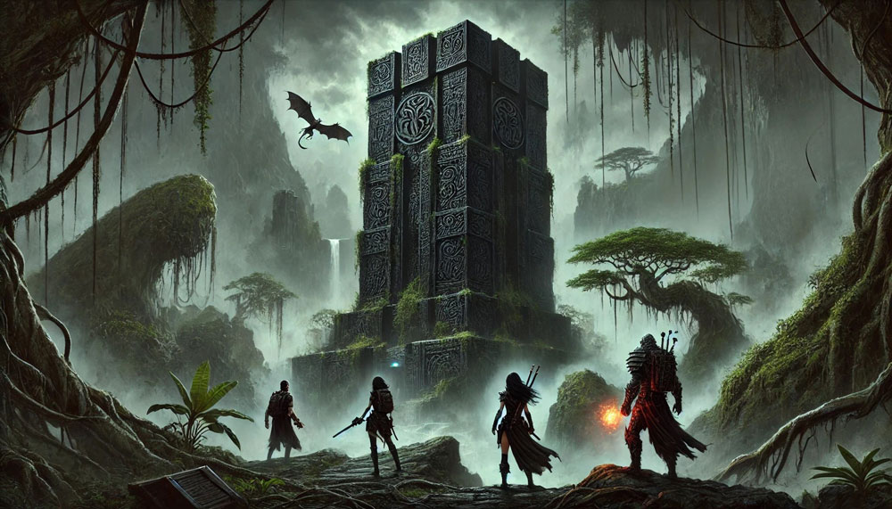

October 9, 2024
The Shadow of the Black Tower
The sea breeze carried with it the scent of salt and the tang of destiny as the crew of the Scourge’s Bane stood in the grand hall of Fort Hazard. For the first time in the history of the Shackles, not one but four officers had been invited to sit among the Pirate Council. Kasmira, Varen, Red, and Finn—the daring souls who had tamed the cursed Island of Empty Eyes—now found themselves surrounded by the lords and legends of piracy.
The Hurricane King presided over the gathering, seated upon his ostentatious throne carved with writhing sea monsters. His presence loomed over the room, but it was the empty seat at the far end of the table, reserved for Besmara herself, that sent an unspoken chill down every pirate’s spine. Goblets of fine wine and plates of roasted boar adorned the table, tempting even the most hardened scoundrels to partake.
Tessa Fairwind rose to her feet, her voice ringing out like a bell above the din. “I propose full shares of the Sargavan tithe for our newest members. Their deeds speak for themselves—have they not earned their place among us?”
Kerdak Bonefist scowled, his knuckles white as he gripped his tankard. “Bah! Full shares? Let them prove themselves, as we all had to. No one skips the line—not even these so-called heroes.”
The room buzzed with murmurs as the vote was cast. Hands rose on either side, and when the tally was finished, the result was razor-thin: six in favor, five against. The officers of the Scourge’s Bane were granted full shares, their worth acknowledged in the eyes of the council, though not without resentment simmering among its ranks.
The meeting dragged on with debates over territories, funding, and petty rivalries. When it was finally adjourned, Kasmira lingered, hoping to engage with some of the other council members, but most had already vanished into the shadows of Port Peril. With little else to gain, the crew turned their attention to the city itself. Coins jingled and stories flowed as they explored its bustling streets, purchasing supplies, sharing tales of adventure, and basking in the glory of their newfound status.
Their revelry was interrupted upon returning to the Scourge’s Bane. A peculiar sight awaited them: a shimmering silver bird perched on the ship’s railing, a scrap of parchment clutched in its beak. Kasmira gently took the letter, her heart sinking as she read Tessa Fairwind’s urgent warning.
“My friends,” it began, “despite your triumphs, there are those who plot against you. Barnabas Harrigan gathers his fleet, and he will come for you when the time is ripe. War looms over the Shackles, and traitors walk among us. If you are to survive, you must prepare. Seek allies, bolster your infamy, and strengthen your fleet. Time is short.”
The weight of the letter pressed down upon them like a stormcloud. They had no choice but to act. After a heated discussion, the crew resolved to begin their preparations with the Isle of the Black Tower. Legends spoke of the Shrouded Queen, a malevolent force whose defeat had cost Captain Aiger her life and her fabled sword, Aiger’s Kiss. If the sword could be recovered, it would not only enhance their power but cement their reputation in the Shackles.
The journey across the Shackles was treacherous, but fortune smiled upon them when they ambushed an unsuspecting merchant ship, adding to their plunder and taking a prize vessel as a secondary target. Their spirits buoyed, they finally reached the Black Tower—a sinister spire rising four hundred feet above the thick jungle.
The oppressive heat of the jungle weighed heavily on them as they hacked their way through vines and biting insects. The air was thick, the undergrowth alive with hidden dangers. Then came the sound—a low, wet squelching—and a monstrosity burst forth. It was a flying tangle of intestines and fanged maws, its grotesque form defying reason. Acid sprayed as Kasmira’s bullets tore into it, burning her flesh. Finn’s kinetic blasts struck true, but the creature lashed out, its jagged teeth snapping. Red waded through the acid, his axe biting deep, while Varen, his musket jammed, finished the abomination with a flurry of pistol shots.
The tower loomed ahead, its surface dark and porous, more magic than stone. Red’s fiery wings carried him to the roof, where he uncovered a hidden entrance buried beneath debris. Inside, the chamber reeked of salt and decay. A grotesque shrine to Dagon dominated the space, its centerpiece a serpentine basin concealing a fist-sized gem. By solving the shrine’s puzzle, they retrieved the gem, only to face a spiked door inscribed with the chilling words, “She Lives.”
Ignoring the warning, they forced the door open. The air beyond the door was heavy, thick with an oppressive darkness that seemed to hum with latent power. The faint flicker of torchlight from the previous chamber barely pierced the void, casting long, twisting shadows that danced across the stone walls. The scent of brine and decay drifted outward, curling around the crew like a warning.
Kasmira’s fingers tightened around her pistols, the weight of their steel grounding her amidst the growing tension. “Whatever’s in there,” she muttered, her voice low but steady, “it doesn’t want us to leave.”
Varen stepped closer to the doorway, his musket cradled in his hands, the faint glow of enchantment trailing along its barrel. “There’s magic ahead—old, tangled magic,” he said, his sharp gaze fixed on the dark beyond. “The kind that doesn’t forget.”
Red rested his axe against his shoulder, his brows furrowed as he whispered a brief prayer to Torag. “Evil always leaves its mark,” he rumbled. “And whatever made this place its home, it’s still here.”
Finn hovered at the edge of the group, his movements silent, his daggers glinting faintly in the dim light. He glanced at Kasmira, a sly grin tugging at his lips despite the unease in his eyes. “We’ve handled worse,” he said.
And as they crossed the threshold, the silence of the room seemed to hold its breath, the weight of unseen eyes pressing down on them. Somewhere deep within, a low, resonant sound—half rumble, half growl—stirred in the darkness.
It was a place of secrets, of forgotten power. And it was only the beginning.